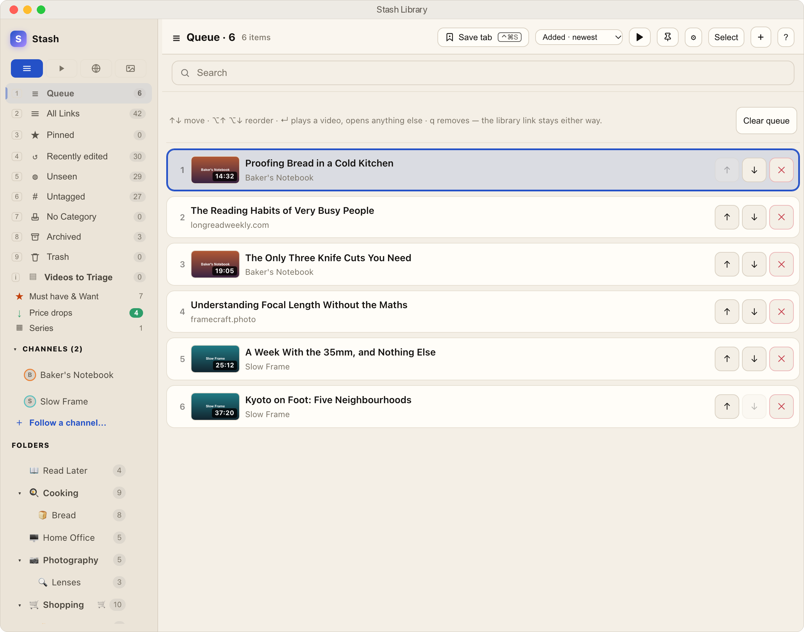
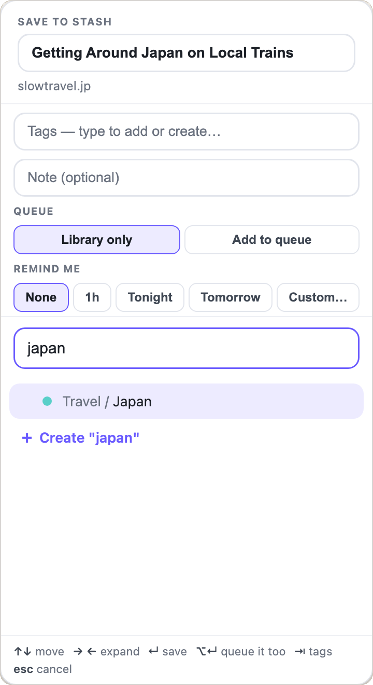

If it’s on your screen, it’s one move from Stash.
A page, a video, a picture, a whole window of tabs. However you found it, there’s a quick way in.
- ⌃⌘SAny web pageFrom Safari or Chrome, with the title already filled in. Pick a folder by typing.
- ⌃⌘SAny YouTube videoThe same key on its page. It’s saved as a video, and plays inside Stash.
- ⌃⌥⌘IPart of your screenDrag a rectangle over anything, in any app, and it’s saved as a picture.
- DragAn image fileDrop it on Stash, or right-click it and choose Send to Stash.
- ⇧SEvery tab at onceKeep a whole browser window as a session, or file it all and close it.
- ShareFrom iPhone and iPadThe share sheet, from Safari, YouTube or any app, straight into a folder.
Everything you save, in one place.
Pages, videos and pictures share your folders and tags. Each has a tab of its own when you only want that kind.



- Folders and tags, nested as deep as you like
- A note on anything
- Whole browser windows saved as sessions
- Duplicates caught, dead links found
- A Trash, and ⌘Z for everything
- Snooze, or a reminder at a time
- Five looks, light and dark
A bookmark app that pays attention.
Here’s how something you save moves through Stash. You press three keys; Stash keeps track of the rest.
- 1Save itPress ⌃⌘S on any page or video. It goes into a folder.
- 2Line it upPress q to add it to your queue: one list of what to read or watch next.
- 3Read or watch itOpen it from Stash. It’s marked as seen, so you always know what you haven’t got to yet.
- 4Put it awayDone? Press a to archive it. It leaves your lists but stays in its folder and in search.
One queue for everything you meant to get to.
Press q on anything, an article or a video, and it joins one shortlist in the order you choose. Videos play right inside Stash and pick up where you stopped; pages open in your browser.
- ⌥↑ ⌥↓ to reorder, 1 to jump to it from anywhere in Stash
- The Videos and Web tabs narrow it to just watching or just reading
- Play and pause from any app, without switching to Stash

Finished with it? Archive it, don’t lose it.
Press a and a link folds away under Archived. It stays in its folder and every search still finds it, so your lists show what’s left and your library keeps everything.
- Opened links are marked seen by themselves. No button to press
- It keeps count, so what you saved and never opened is one view away
- Archive a whole selection at once, or a new video straight from triage

New videos ask first.
Follow a YouTube channel and its new uploads wait in Videos to Triage for a decision, one key each, instead of piling up in a feed.
- q queue it, m file it, t tag it, a keep it archived, d skip it
- Give a channel a folder and what you keep files itself
- Parts of a series (Part 3, Lesson 7) stay together, in order

It tells you when the price drops.
Mark a folder as a shopping list and Stash checks the prices for you, shows the old price beside the new one, and counts down the days before a deal ends.
- Must have, Want and Someday, each with a running total

Search the way you think.
Words, tags, sites, folders, how long a video runs, and whether you’ve opened it yet. ⌃⌘F from any app.
#tagsite:folder:dur:<10unseenarchivedbroken- Keep any search as a smart collection that stays up to date
It knows what you already own.
Point Stash at a folder of notes about your own things, and every new link about one of them is tagged with it the moment it arrives.
- Leave the folder unset and none of this appears

Ask your AI what’s in your Stash.
Turn on one switch and Claude, or any app that speaks MCP, can search your library, see your queue and check your shopping list.
- Saving and filing only if you allow it. Nothing can ever be deleted
- Off until you turn it on, and only for apps on this Mac you give the key to
What have I saved about bread that I still haven’t opened?
Two things in Cooking › Bread: the Wikipedia article on Sourdough, and a picture you saved, Sourdough, second attempt.
Anything on my shopping list get cheaper?
Four things. The biggest drop is the Compact Travel Tripod, now $149, down from $199.
Every action has a key.
73 of them, and you never have to learn one: press ? for the list, or ⌘K and type what you want done. The ones that work from anywhere on your Mac are yours to change.

Anywhere on your Mac
- Save the tab you’re on⌃⌘S
- Search everything you’ve saved⌃⌘F
- Bring up the sidebar⌃⌘L
- Clip part of the screen⌃⌥⌘I
- Play or pause, from any app⌃⌥⌘Space
Getting around
- Do anything by name⌘K
- See every shortcut?
- Jump straight to a view1to9
- Undo a move, tag or delete⌘Z
On a link
- Move it to a folderm
- Tag itt
- Mark it seen or unseenu
- Archive it, kept but out of the waya
- Snooze it until a datez
- Put it in the queueq
Tabs and videos
- Save the whole window as a session⇧S
- File the whole window, then close it⇧A
- Play a video inside Stashy
- Follow a YouTube channel⇧F
- See what your channels just postedi
Beside your browser, and in your pocket.
On the Mac, Stash docks to the edge of the screen and moves your browser over to make room. ⌃⌘S on any page opens the save sheet with the title filled in.
On iPhone and iPad it’s the same library: share anything into Stash and it lands in the folder you pick. It stays in step through your own iCloud.
- Safari and Chrome, reading only the address and title of the tab you’re on



Your links, on your Mac, in a file you can read.
Stash keeps your library on your own machine as plain, readable JSON. No account to make, and no server in the middle. What goes out is the pages Stash fetches to get you a title and a price, and, only if you connect one, what you ask your AI app about. If you ever stop using Stash, your links are still right there.